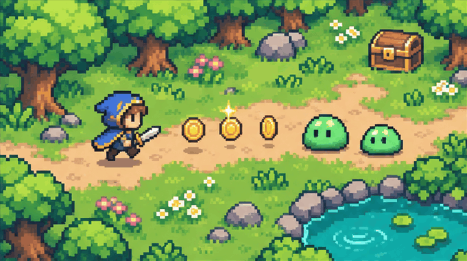

GAME UI ICONS
웹게임을 위한
UI 아이콘
같은 게임, 다른 아이콘.
가운데 바를 좌우로 움직여 보세요
배경과 배치는 그대로. 아이콘만 바꿨어요.
2D 도트게임 · GIF 데모
체력, 코인, 보석과 장비 아이콘을 비교합니다. 왼쪽·오른쪽 방향키로 조절하고, Home은 Playglyph 전체, End는 Lucide 전체를 표시합니다.
게임 UI를 위한 아이콘
체력, 재화, 장비, 보상까지.
게임을 만들 때 필요한 아이콘을 한곳에.
단색부터 컬러 스티커까지
깔끔한 단색, 입체감 있는 컬러.
같은 아이콘을 게임 분위기에 맞게.
웹게임에 바로 사용
HTML, React, Canvas에서 사용하고
익숙한 아이콘 이름으로 찾아 쓰세요.